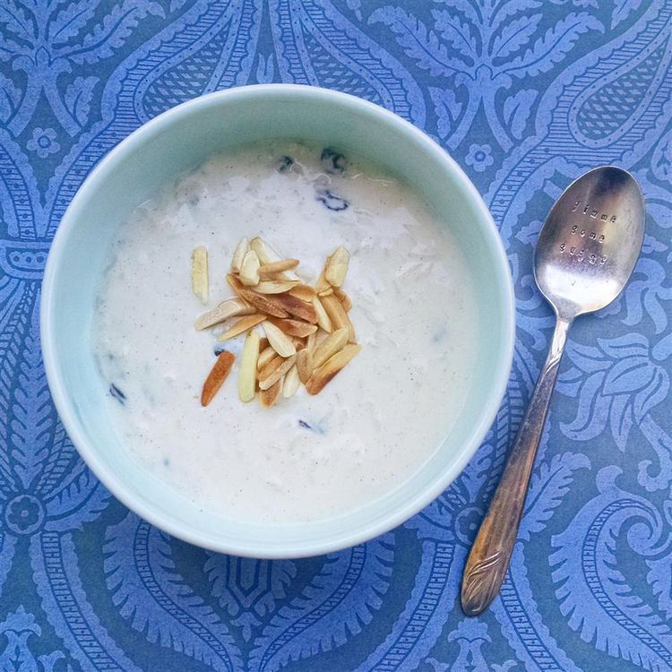

Kheer

Description
Easy kheer recipe for Indian rice pudding. It's so full of flavor and very easy to make — it's the best rice pudding I've ever had!
Ingredients
- 2 cups coconut milk
- 2 cups milk
- 3 tablespoons white sugar
- ½ cup basmati rice
- ¼ cup raisins
Steps
- Bring coconut milk, milk, and sugar to a boil in a large saucepan over medium heat.
- Add rice, reduce the heat to low, and simmer until mixture thickens and rice is tender, about 20 minutes.
- Stir in raisins, cardamom, and rose water; cook for a few more minutes.
- Ladle into serving bowls and garnish with almonds and pistachios.